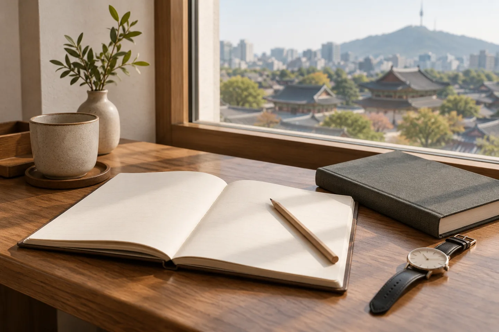
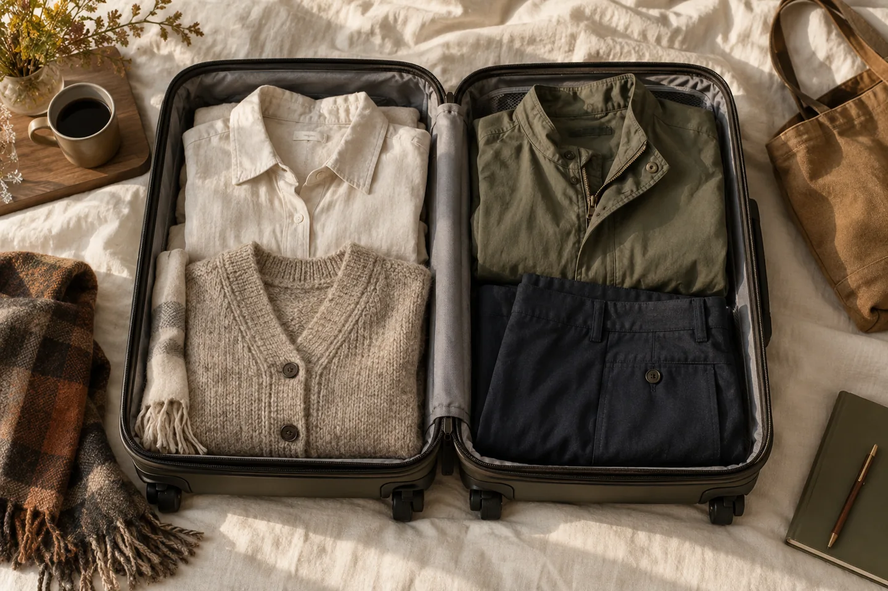
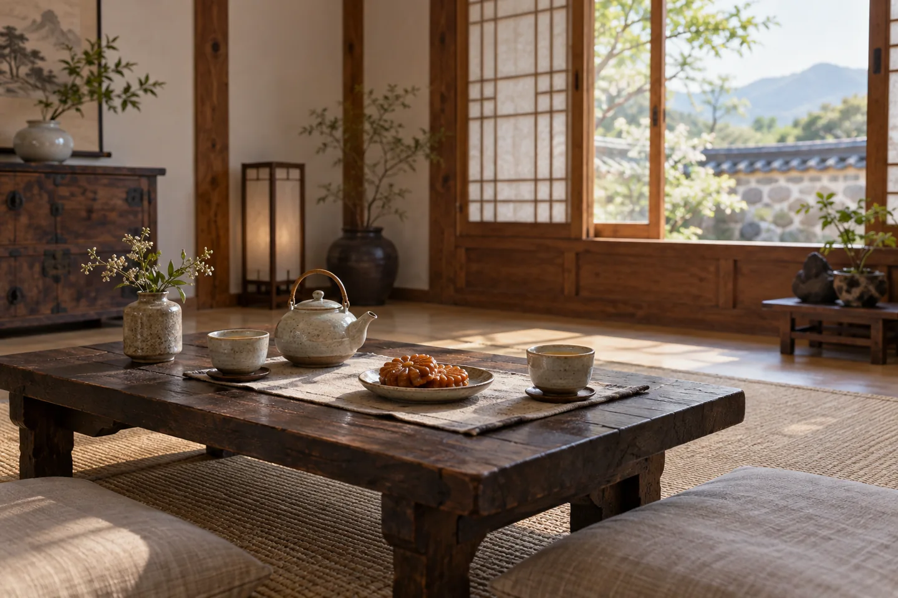
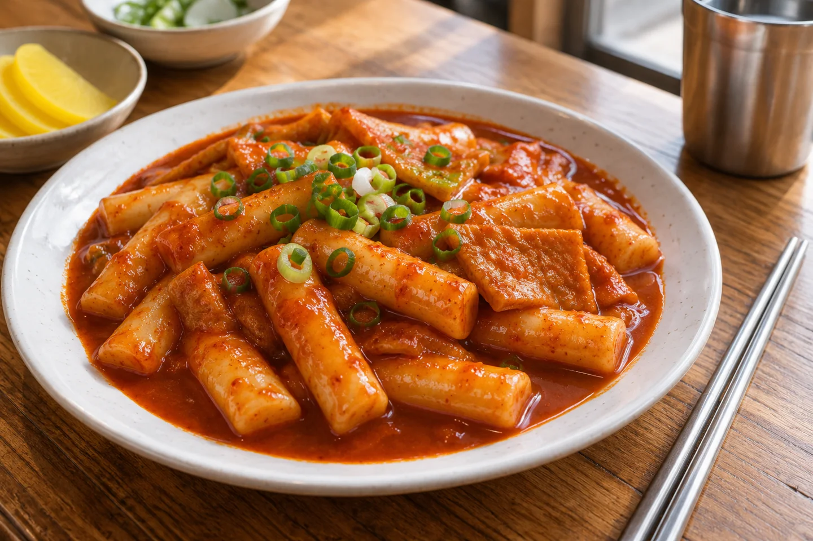
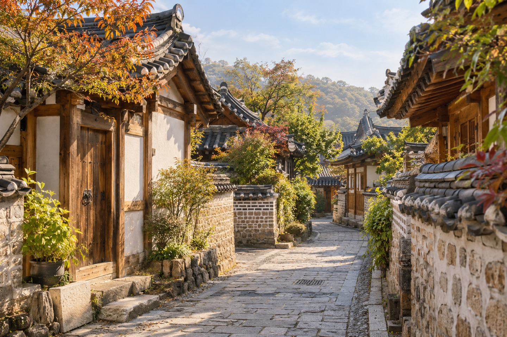

Art / October 29, 2026
A museum visit with room to look ↗

AI-generated planning scene; the window view is imagined.Choose a small focus, carry less, and notice shape, surface and space at the National Museum of Korea.
Places, meals and small details.
Start in Seoul. Look a little further.

AI-generated planning scene; the window view is imagined.Choose a small focus, carry less, and notice shape, surface and space at the National Museum of Korea.
 AI-generated clothing illustration.
AI-generated clothing illustration.Recognize the basic garments, look closer at their shape, and prepare for a fitting.

AI-generated packing illustration.Flexible layers, a rain option, comfortable walking shoes and a lighter day bag.

AI-generated illustration; an imagined setting.Recognize omija, yuja and jujube tea, and make a slower stop part of your travel day.

AI-generated food illustration.Four everyday snacks — tteokbokki, gimbap, eomuk and hotteok — with practical ordering tips.

AI-generated illustration; not a documentary photograph.Look at traditional rooflines, leave time for bibimbap, and plan a comfortable visit beyond Seoul.
The original six-part guide: palace courtyards, Korean art, city views, food, clothing and seasonal packing ideas.
Read the Seoul guide ↗These guides draw on official visitor information. AI illustrations are labeled. Personal visit stories will use original photos and notes when available.
About SSAB ↗